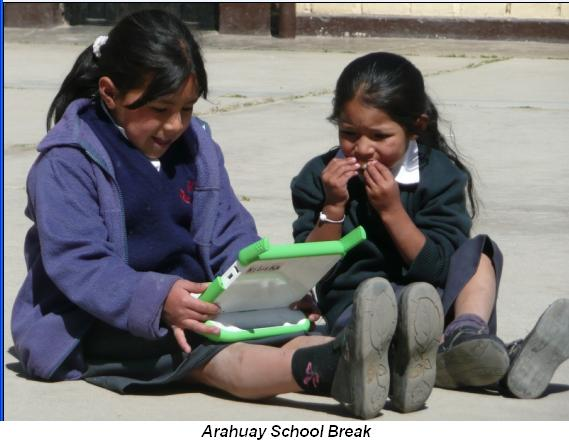

Laptops para escolares peruanos se distribuirán a partir del 10 de marzo
Treinta instituciones educativas del departamento de Huancavelica serán las primeras en beneficiarse con el ambicioso programa Una Laptop por Niño, que se iniciará a partir del 10 de marzo, cuando un primer lote de 2.200 computadoras portátiles se comiencen a transportar hacia esa región.

Los equipos serán trasladados a las unidades educativas de gestión local (UGEL) ubicadas en las provincias o distritos de los 24 departamentos seleccionados para la primera etapa. “La entrega de las laptops a los escolares se hará a través de los maestros de las 569 escuelas rurales beneficiadas”, expresó Óscar Becerra, director general de Tecnologías Educativas del Ministerio de Educación.
Becerra también precisó que todo el proceso logístico de registro, embalaje y distribución de los primeros 40.000 equipos (25.000 llegaron a Lima el martes pasado por vía aérea y los 15.000 restantes deben arribar el 24 de marzo) durará unos 45 días.
Las laptops serán enviadas a escuelas rurales multigrado unidocentes de 146 provincias de los 24 departamentos del país. La activación de los equipos se hará en los respectivos colegios y estará a cargo del docente responsable.
Las computadoras llegarán a cada provincia o distrito en las cajas en que partieron desde China. En lugares donde no exista energía eléctrica se ha previsto el envío de un cargador de energía solar por cada cinco equipos. “Si hay más de 30 laptops en un colegio, recibirán un grupo electrógeno pequeño”, acotó Becerra.
Este video es un reportaje al piloto realizado en Perú (espero que Didier de Saint Pierre lo vea):
Pueden ver también estos apuntes de Ivan Krstic en su travesía por Perú preparando todo para este desembarco.